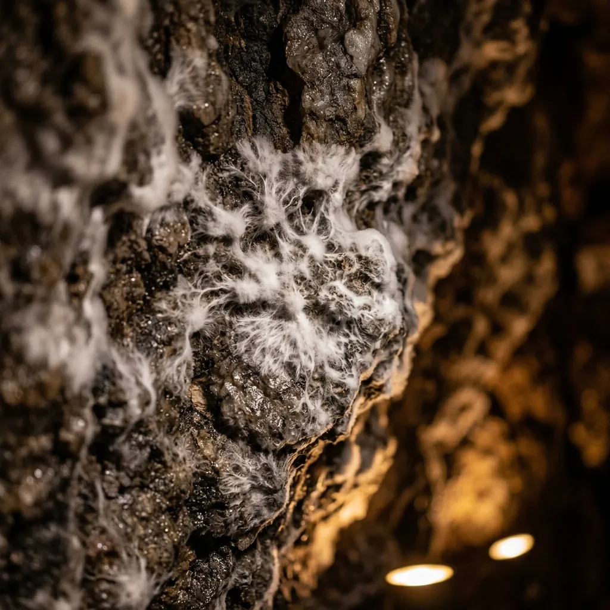
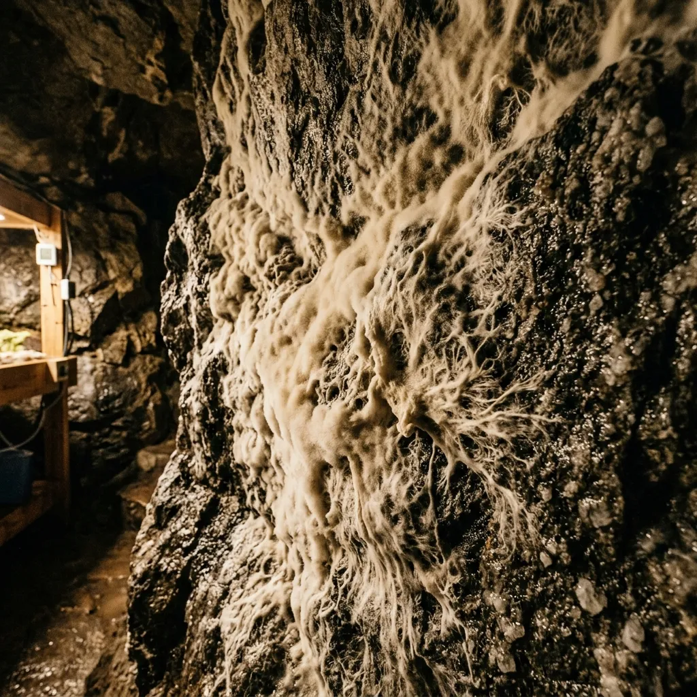

We Grow Living Walls for Deep Underground Sanctuaries.
Self-healing mycelial bio-membranes that transform raw rock vaults into warm, breathable wellness spaces.
Stepping into a subterranean salt cave or underground flotation sanctuary should feel like entering a quiet embrace, not a cold granite cell. We cultivate native forest mycelium directly onto raw underground quartz walls, creating thick velvety bio-linings that regulate moisture and soften acoustic glare. Grown without synthetic glues or artificial chemicals, our living surfaces breathe alongside your guests while naturally filtering subterranean damp.
Architecture That Breathes and Heals Itself.
Raw underground rock chambers present a constant architectural challenge: cold moisture seeping through micro-fissures, harsh echo, and the persistent damp chill of the deep earth. Traditional mineral wool and synthetic sealants merely trap water behind rigid barriers, eventually rotting or flaking under subterranean humidity. Our bio-linings approach the underground differently, working with natural moisture rather than fighting it. By introducing native Ganoderma hyphae bound to sterilized organic substrates, we invite a living network to weave through the rock face.

Over three weeks of gentle incubation under low-voltage heat lamps, the fungal hyphae branch into a dense, velvety mat five centimetres thick. This living barrier continuously absorbs excess atmospheric humidity during peak sanctuary use and releases it slowly when ambient air dries out. If a surface scratch or structural shift occurs, the active mycelium secretes natural enzymes to knit its hyphal network back together within seventy-two hours. The result is a tactile, suede-like surface that stays warm to the touch, absorbs ninety percent of ambient echo, and smells faintly of sweet forest earth.
Four Layers of Biological Shielding
Natural living systems out-perform industrial chemical sealants in every measurable subterranean comfort metric. Our engineered mycelial structures deliver exceptional protection without compromising environmental integrity.
Moisture Attenuation
Our VeldMesh-9 hyphal matrix actively manages atmospheric water vapour. Instead of deflecting condensation, the dense biological mesh absorbs up to 40% of its dry weight in humidity without sagging, releasing it back during dry cycles to maintain a perfect respiratory baseline for delicate respiratory treatments.
Radon & Heavy Air Filtration
Deep rock fissures often release microscopic particulates and trace mineral gases. The micro-porous web of the mature mycelium membrane captures soil particulates naturally, preventing stagnant air accumulation in lower vault zones and maintaining crisp, breathable atmospheres.
Acoustic Absorption
Harsh cave reverb destroys the quiet intimacy required for flotation therapies and meditation. Achieving an NRC rating of 0.85, the deep suede-like cellular structure absorbs sharp sound frequencies, turning echoes into soft murmurs and promoting profound sensory rest.
Thermal Softening
Regardless of the backing rock chill—even against bare basalt at 12°C—the biological insulation layer maintains a consistent, warm surface temperature of 21°C. It retains internal sanctuary warmth without artificial thermal breaks, reducing heating loads entirely naturally.
Explore Material Test SpecsThe 21-Day Sanctuary Growth Sequence
A clean, quiet, zero-waste application tailored specifically for sensitive underground locations, avoiding the dust and noise of traditional fit-outs.
Substrate Spraying
We apply a nutrient-dense mixture of recycled pine sawdust and oat husk directly to the raw rock face. This creates a stable, organic foundation for growth without invasive drilling or anchoring, respecting the structural integrity of historical mine shafts and caves.
Spore Inoculation
Our specialized technicians mist the exclusive VeldMesh-9 Ganoderma strain evenly across the prepared substrate frame. This begins the delicate biological binding process deep within the quartz or granite fissures, establishing the living root system.
Incubation
The vault is temporarily sealed and subjected to an ambient 22°C steam-mist curing process. Over fourteen days, the hyphae rapidly consume the substrate, forming a thick, interwoven structural wall that binds completely to the subterranean contours.
Soft Maturation
A controlled, light drying process halts further fruiting while leaving the dormant mycelium network fully intact. This final stage leaves a durable, velvety suede finish ready for immediate spa use, requiring no ongoing watering or complex maintenance.
Review Installation ScheduleAtmospheric Readouts from Sabie & Beyond
Sanctuary guests consistently report deeper relaxation and cleaner breathing within our mycelium-lined vaults across the Mpumalanga escarpment.
"Since replacing our synthetic acoustic baffles with Deep Crust's bio-lining, the heavy dampness is entirely gone. The air smells remarkably crisp, like a morning forest floor, and the silence inside the meditation vault is incredibly soft."— Director of Wellness, Drakensberg Thermal Vaults
"The VeldMesh-9 installation completely solved our condensation issues against the raw quartz. Guests frequently touch the walls and are amazed by the physical warmth. It feels as though the cave itself is alive and actively protecting them during their sessions."— Operations Lead, Sabie Quartz Spa
Request a Subterranean Site Audit
Work directly with our Sabie bio-craftsmen to tailor the exact Ganoderma strain selection to your specific rock chemistry, vault depth, and ambient humidity profiles.